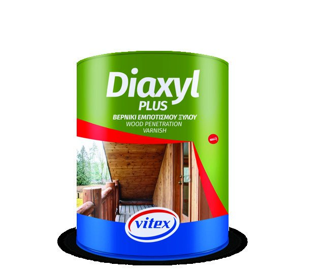

Лак-пропитка · ПУ, вода/растворитель
Diaxyl Plus
Полиуретановый лак-пропитка с УФ-фильтрами для защиты и декора дерева внутри и снаружи. Высокая стойкость к непогоде и солнечному излучению. На водной основе и на растворителе.
- Расход 13–16 м²/л
- Сушка 2–3 часа
- Вода / растворитель
- УФ-фильтры